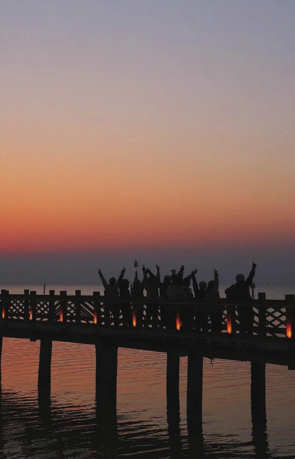

过客的光阴
原刊133


22春黄花城的一把篝火，点燃了我对23车协年冬游的向往。我是22春时加入车协，接连去了黄花城、蟒山、禅房三次拉练。23秋时，我参与了凤凰岭前站、凤凰岭正式，正常举办的（八大处和京西古道）社考拉练、大运河、慕田峪和十三陵前站均因时间冲突无法参与，本盘算着还有十三陵正式、石花洞、潭柘寺等多次冬训拉练可以赚冬游积分，却由于疫情的原因，后面的这些拉练都未能成行。
冬训条件必然是要更改的，拉练次数降低为至少参加一次指定拉练即可，不巧的是，我唯一参加的凤凰岭刚好不在指定内。我期待了一整年的冬游，阴差阳错下终是化为泡影，懊悔、伤心、绝望。那晚我发消息给dudu说，我跟车协终究差了一点缘分。
十分钟后，她回复我：“不要担心，车协不是一刀切的地方。”至今，我未曾问过那十分钟内发生的事情，猜想也许她去询问了主席团的意见，感谢她笃定的这句话拯救了痛哭流涕的我，让我重新燃起了希望，感谢车协的包容，让每个会员真正“有梦就能骑”。23秋的车协年是不圆满的，五四晚训的朋友才刚混了个脸熟，疫情便卷土重来，会员们或回家，或留校，我选择封在医学部，与会员们相约在风雨操场自己打卡，历史讲座也变成了线上。
但也正是因为疫情，我所在的23冬游C组原定的组长无法继续担任组长，游乐顶替上去，成为了车协史上少有的没有带队经验的冬游组长。与23冬游C组的相逢、相识、相知，一切都是如此美妙。游乐是我在22黄花城路上认识的新会员，他同我一样，都是22春入协的，后来又一起成为23凤凰岭的前站成员，我与这个温暖细腻的男孩有着颇深的缘分；椰汁也是我在22春认识的，她是知性与有趣的具象化，我一直想与她进一步了解，幸运的是冬游分到了一个组，创造了很多可爱的回忆；我对明非的第一印象在22黄花城，回程恰好坐在同一桌，他介绍自己是22级本科中文系，后来才知道实际上是个数学系硕士老油条，差点被骗。
其他人就都是23秋，甚至是冬游成组后才认识的。组长拉冬游群的那一天，群里尽是一个又一个陌生的微信昵称和头像，后来都成为了我最熟悉的朋友。晚风又聪明又憨憨，上桥爬坡时“企图”推我，然后顺利地把我推翻了；浅言总是笑眯眯地盯着我看，最喜欢晚上开组会的时候给他扎小辫儿；土山是头号小黑子，拿着泡泡枪在凌晨漆黑的夜里跟我一起跳着转圈圈，精神状态良好；孟德总是会关（教）心（导）我不要大档起步，但我总记不住停车前调小档；橘猫是只有想法又有行动力的猫猫，文笔非常好，我跟他以及萝卟头一起在西湖边散步，聊至落日时分；东日教我纯正的粤语，还陪我去医院看病，她在温州的医院大受震撼，结果变成我带她参观医院（bushi）。
后来组长提及，东日主动要求，承担了多天的押后和队医职务，她真的我哭死（现在想起，很后悔当时没有给押后们多些关心）；炸土豆敢想敢做又可靠，喜欢听她讲自己的经历和故事，期待以后去她的房车里吃亲手做的煎饼果子；菜叶子是最可爱的小朋友，我在她身上看到了另一种世界，冬游结束后还和菜菜一起去长沙玩，两个人狂吃狂吃；华年的修车讲座我认真学习，讲得真好，就是我比较笨，现在依旧不会换胎；萝卟头的生日碰巧在冬游期间，我给萝卟头拍了一张吹蜡烛表情包，很像急急国王。
最后一天我身体不适，坐货拉拉去温州，也是萝卟头一路在后备箱陪伴我。14个人，700km，苏州—温州，我们共同完成了一次庞大的骑行，记忆中却都是这些琐碎的温馨。谢谢你们，构成了23车协年中，我最完满的幸福。
23秋第一次晚训时，队长让大家介绍自己的ID，我对面站着游乐。从22黄花城算起，时隔半年，晚训上再见面，我跟身边的众多会员们还不太熟络，而他已经是22实践团归来的老会员，身边都是熟悉的朋友。23春，我又去了黄花城，这次和我熟悉的冬游C组伙伴们坐在一起，一同观看了我们的冬游视频。
一年又一年的轮回，你在这里投入的爱，其实都会反回来滋润你。现在已是24秋，我不再活跃于拉练和论坛，偶时关注一下，看到今年的冬游成了四个组，人丁兴旺。车协于我，是23的故事，于他们，会有同样或哭或笑的回忆。
在车协，没有人永远在路上，但永远有人正在路上。祝福车协，祝福行者们！